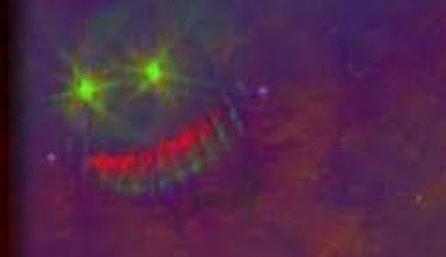
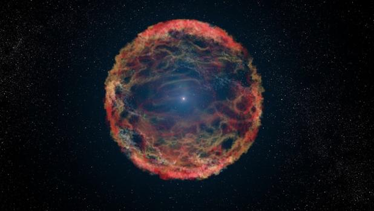

Teorias Conspiranoicas Del espacio
1-Benjamín Silva
Dentro de la constelacon de virgo, se encuentra una "formacion de cuerpos celestes" que forma un rostro de Dragón bastante tetrico, se cree que esta formacion de cuerpos no sea solo una formacion, si no que podria tratarse de un dragon gigante que mira fijame nte a la tierra.
(debido a la preocupacion de algunos por este extraño rostro en el espacio, google sky ha censurado este rostro, lo que preocupa mucho mas a la gente),

2-Estrellas Zombies
Se conoce que una estrella muere despues de que realiza una supernova y estalla, pero hay halgunas estrellas que son capaces de hacer mas de 1 supernova.

3-Agujeros Negros
Un agujero negro es una región finita del espacio descrita en las ecuaciones de Einstein, cuyo interior posee una concentración de masa lo suficientemente elevada como para generar un campo gravitatorio